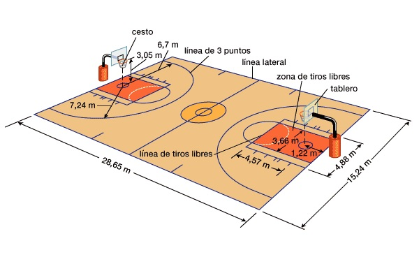

El terreno de juego debe ser una superficie rectangular, plana y dura, libre de obstáculos Para las principales competiciones oficiales de FIBA, así como para los terrenos de juego de nueva construcción, las dimensiones deben ser de 28 m de longitud por 15 m de anchura, medidas desde el borde interior de las líneas que delimitan el terreno de juego. Para todas las demás competiciones la institución apropiada de FIBA, como puede ser la Comisión Zonal o la Federación Nacional, tiene autoridad para aprobar los terrenos de juego existentes con unas dimensiones mínimas de 26 m de longitud y 14 m de anchura.
Techo
La altura del techo o del obstáculo más bajo debe ser, como mínimo, de 7.00 m.
Iluminación
La superficie de juego debe estar iluminada uniforme y convenientemente. Las luces deben estar colocadas de manera que no dificulten la visión de los jugadores y del equipo arbitral.
Líneas
Todas las líneas deberán ser trazadas del mismo color (preferiblemente blanco), tener 5 cm de anchura, y ser completa y claramente visibles.
Líneas de fondo y laterales
El terreno de juego estará delimitado por las líneas de fondo (los lados cortos del terreno de juego) y las líneas laterales (las líneas de los lados largos del terreno de juego). Estas líneas no son parte de terreno de juego. El terreno de juego deberá distar al menos 2 metros de cualquier obstáculo, incluyendo los integrantes de los banquillos de los equipos.
Línea central
La línea central es la línea trazada paralelamente a las líneas de fondo desde el punto central de cada línea lateral que se prolongará 15 cm por la parte exterior de cada línea lateral.
Líneas de tiros libres, áreas restringidas y pasillos de tiros libres
La línea de tiros libres estará trazada paralela a cada línea de fondo. El borde exterior de esta línea estará situado a 5,80 m del borde interior de la línea de fondo y tendrá una longitud de 3,60 m. Su centro estará situado sobre la línea imaginaria que une el centro de las dos líneas de fondo. Las áreas restringidas son los espacios marcados en el terreno de juego limitados por las líneas de fondo, las líneas de tiros libres y las líneas que parten de las líneas de fondo, tienen sus bordes exteriores a 3 m de los centros de las mismas y terminan en el borde exterior de las líneas de tiros libres. Si se pinta el interior de las áreas restringidas, deberá ser del mismo color que el del circulo central. Estas líneas excluyendo las líneas de fondo, son parte del área restringida. Los pasillos de tiro libre son las áreas restringidas ampliadas en el terreno de juego por semicírculos con un radio de 1,80 m y el centro situado en el punto medio de las líneas de tiros libres. Se trazarán semicírculos similares con una línea discontinua en el interior de las áreas restringidas.
Círculo central
El círculo central debe estar trazado en el centro del terreno de juego y debe tener un radio de 1,80 m. medido hasta el borde exterior de la circunferencia. Si el interior del círculo central está pintado deberá tener el mismo color que las áreas restringidas.
Zona de canasta de tres puntos
La zona de canasta de tres puntos de un equipo es todo el terreno de juego excepto el área próxima a la canasta de sus adversarios que limita y que incluye :
· Dos líneas paralelas que parten de la línea de fondo a 6.25 m del punto del suelo directamente perpendicular al centro exacto de la canasta de los adversarios. La distancia de este punto al borde interior del centro de la línea de fondo es de 1,575 m.
· Y un semicírculo de 6,25 m de radio desde el lado exterior hasta el centro que es el mismo punto citado anteriormente y que corta las líneas paralelas.
La línea de 3 puntos no es parte de la zona de canasta de 3 puntos
Zonas de los bancos de los equipos
Las zonas de los bancos de los equipos estarán marcadas fuera del terreno de juego en el mismo lado que la mesa de anotadores y los bancos de los equipos, del siguiente modo: Cada zona estará limitada por una línea que parte de la línea de fondo de al menos 2 m de longitud y por otra línea de al menos 2 m de longitud trazada a 5 m de la línea central y en ángulo recto con la línea lateral.